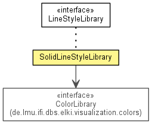

de.lmu.ifi.dbs.elki.visualization.style.lines
Class SolidLineStyleLibrary
java.lang.Object
 de.lmu.ifi.dbs.elki.visualization.style.lines.SolidLineStyleLibrary
de.lmu.ifi.dbs.elki.visualization.style.lines.SolidLineStyleLibrary
- All Implemented Interfaces:
- LineStyleLibrary
public class SolidLineStyleLibrary
- extends Object
- implements LineStyleLibrary

Line style library featuring solid lines for default styles only
(combine with a color library to obtain enough classes!)
LineStyleLibrary.FLAG_STRONG will result in thicker lines.
LineStyleLibrary.FLAG_WEAK will result in thinner and semi-transparent lines.
LineStyleLibrary.FLAG_INTERPOLATED will result in dashed lines.
|
Method Summary |
void |
formatCSSClass(CSSClass cls,
int style,
double width,
Object... flags)
Add the formatting statements to the given CSS class. |
| Methods inherited from class java.lang.Object |
clone, equals, finalize, getClass, hashCode, notify, notifyAll, toString, wait, wait, wait |
colors
private ColorLibrary colors
- Reference to the color library.
SolidLineStyleLibrary
public SolidLineStyleLibrary(StyleLibrary style)
- Constructor.
- Parameters:
style - Style library to use.
formatCSSClass
public void formatCSSClass(CSSClass cls,
int style,
double width,
Object... flags)
- Description copied from interface:
LineStyleLibrary
- Add the formatting statements to the given CSS class.
Note: this can overwrite some existing properties of the CSS class.
- Specified by:
formatCSSClass in interface LineStyleLibrary
- Parameters:
cls - CSS class to modifystyle - style numberwidth - line widthflags - meta objects to request line variants